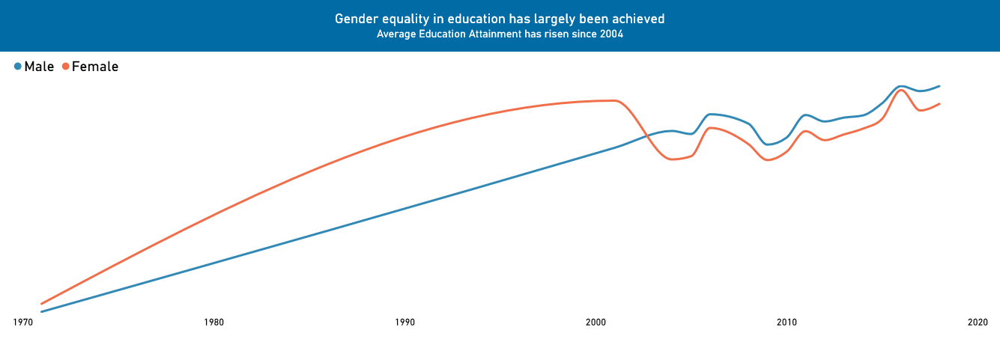
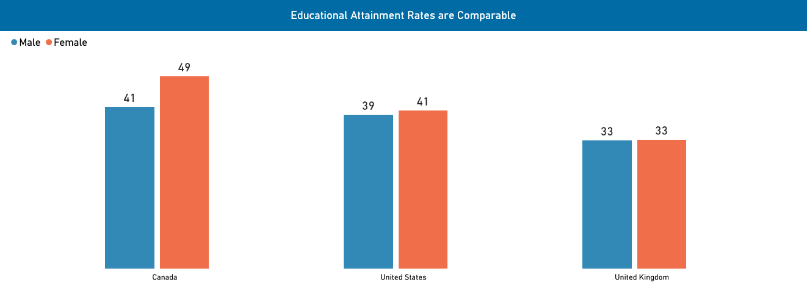
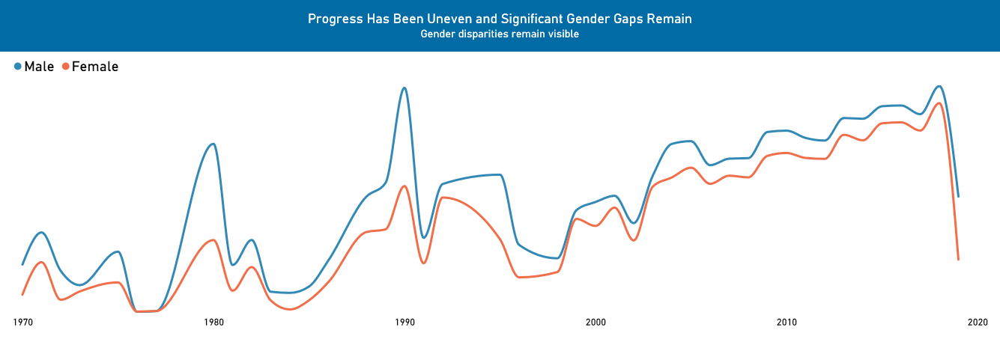
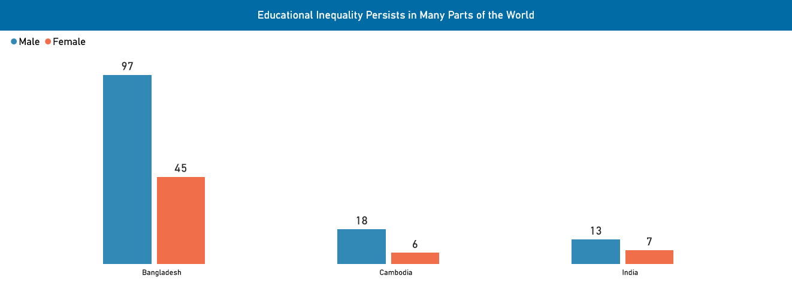

DSC 209R / Project 2 / Persuasive visualization
Gender equality in education
Proposition
Gender equality in education has largely been achieved.
Two opposing perspectives on educational attainment.
01 / Supporting the proposition
Gender equality in education has largely been achieved


Design decisions and rationale
Scoring: −2 = fully deceptive · +2 = fully earnest.
- Selecting countries with more equal attainment. −1.5
In selecting countries where attainment is equal for women, we are exlcuding other countries that may not be as fair to prove a point in attainment.
- Using a long time frame in the line chart. +1
By using a longer time frame we can see the improvement of educational attainment for women more clearly.
- Keeping male and female colors consistent. +1.5
Blue represents male while orange represents female. This consistency makes it easier to follow the trends and to see which sex is which.
02 / Opposing the proposition
Gender inequality in education still persists


Design decisions and rationale
Scoring: −2 = fully deceptive · +2 = fully earnest.
- Selecting countries with visible disparities. −1.5
By picking countries where attainment is more difficult for women, it appears as a whole that educational attainment has not been progressive for women.
- Using titles centered on remaining inequality. −1
The titles use negative wording and phrasing to empahsis the opposing side that educational attainment has not been acheieved.
03 / Source
Original checkpoint visuals
The visuals were taken from my checkpoint submissions for Project 2 using PowerBI to build. Project 2 Checkpoint PDF.
The supplied dataset is education.csv.
04 / Final reflection
Persuasion through selection and framing
As a data scientist it is our responsibility to create visualizations that tell the whole story and while persuading others to see our point of view. In this Project, I had to cherry pick my data which was uncomfortable but necessary to see the other side of data visualziation. We can do anything we want with the data, but does that make our point true?
In this project I learned to be deceptive. I used my filters to make my point true and I used language to emphasis what I was trying to show. Ethical visualziation is key in data science and showing the whole story is what makes data reliable and respected.